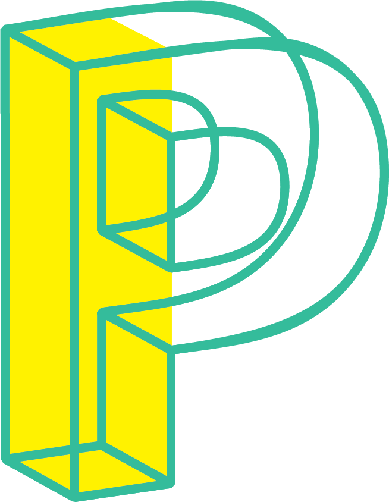

Essay
A museum, whether it is historical, cultural, or artistic, is an institution of confinement. Whether we trace it back to its history as private art collections—a way for rich people to take creativity and taste and reduce it to soulless valuation, or as a colonist's trophy room, their legacy is to take the limitless possibilities around us and reduce it to very limited, confined rooms.
The Museum of Impossibilities/Possibilities invites everyday people to propose and exhibit art, ideas, concepts, structures, whatever, that straddle the line of possible and impossible, because this line, point, or cloud between what is possible and what is not, what can be imagined and what can't, that is the realm that we want to lean into. This is where a new world can be imagined, this is where new possibilities reside.
Traditional museums showcase and promote one thing above all, their own boundaries. There may be a fossil or a Picasso, but the museum-goer will spend most of their time seeing white walls, glass cases, cord stanchions. Museums might explore subjects of oppression and colonization, or it might make a compelling argument on the beauty of blues and vibrance of reds, but the underlying message is the same one: you, the museum-goer is not part of that history, you are a spectator to beauty, you are a bystander to change and movement.
MoI/P challenges that notion, it wants to embrace the nebulous, the uncertain, the speculative, the deviant, the ungovernable—everything a normal museum would deem undesirable, unobtainable, or even impossible. In fact, MoI/P doesn't stop at what a museum finds impossible, the Museum of Impossibilities welcome proposals that are currently or forever impossible in our reality.
The goal is to build our capacity to operate in the spectrum that spans impossible to possible, these can be ideas that are feasible but would require a large amount of funding the Museum of Possibilities currently don't have, or they can be ideas that are untested and unproven, or they can be ideas that defy the laws of physics.
Each idea, or proposal, or exhibition can take many forms. They can be proposals, taking the form of an experimental fiction prompt response, or a short video that acts as a docu-fiction movie. They can be a multimedia exercise, creating ephemera for the idea, making posters, pamphlets, advertising for the proposed exhibition. And they can be tangible exhibitions as well, perhaps the impossible task is actually possible, or perhaps there's a way to execute it in its most "possible" form.
The beauty is that every step in this process is just as much part of the exhibition as any supposed finished product. Creating a billboard for an exhibition that doesn't exist is also part of the exhibition. To jot down a paradoxical premise of an exhibition is more powerful than a rare artifact cataloged at the British Museum, because the former channels the lineage of playing and creating as verbs that can enact change, while the latter merely functions to coalesce existing power structures.
The Museum of Impossibilities/Possibilities tackles the impossible seeming task of overthrowing those very power structures. And its confidence doesn't come from the strength of its funding, collection, people, or resources, but rather that the MoI/P has always existed and will always exist, that it exists outside traditional museums—but also within, around, on, through them. The Museum of Impossibilities/Possibilities is merely the latest name for the ever-burning energy of radical imagining.